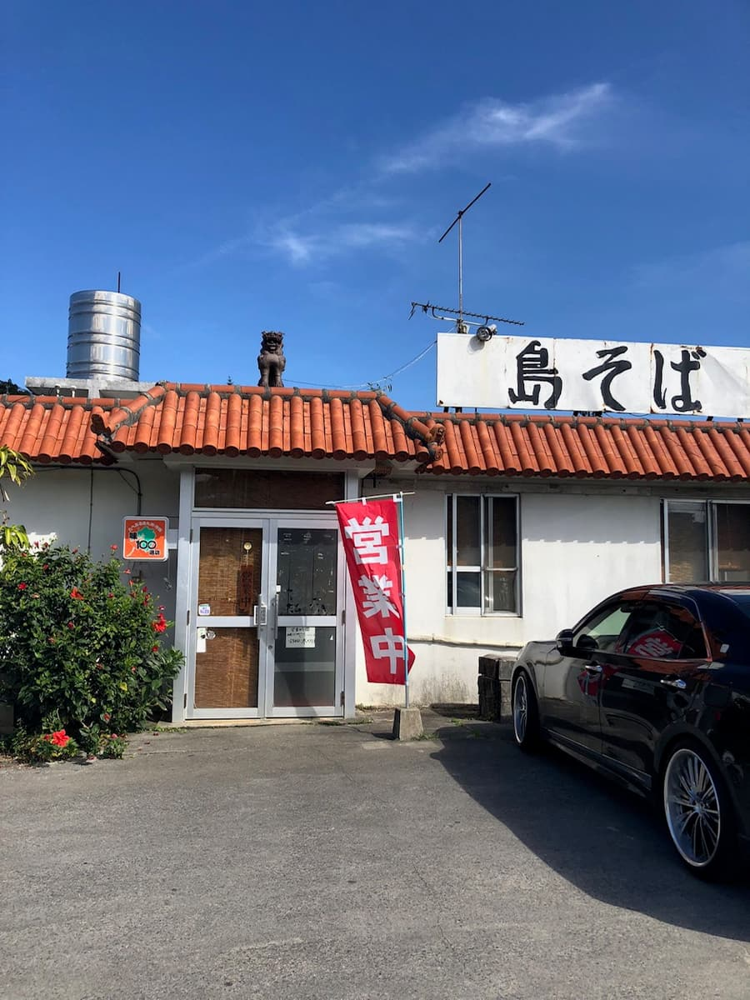
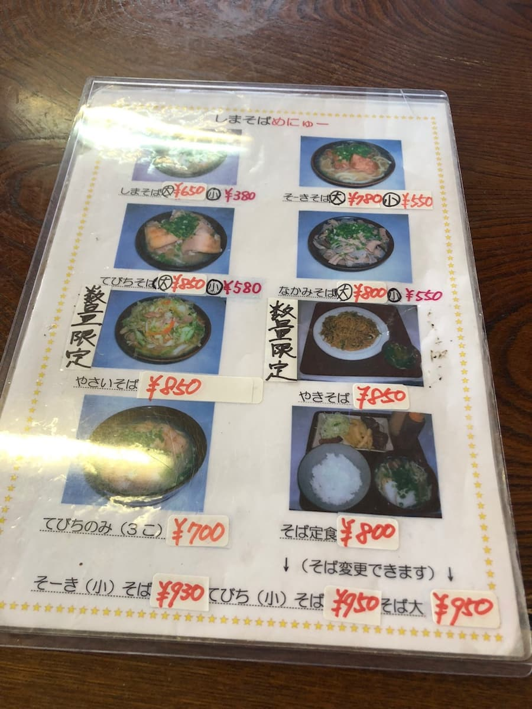
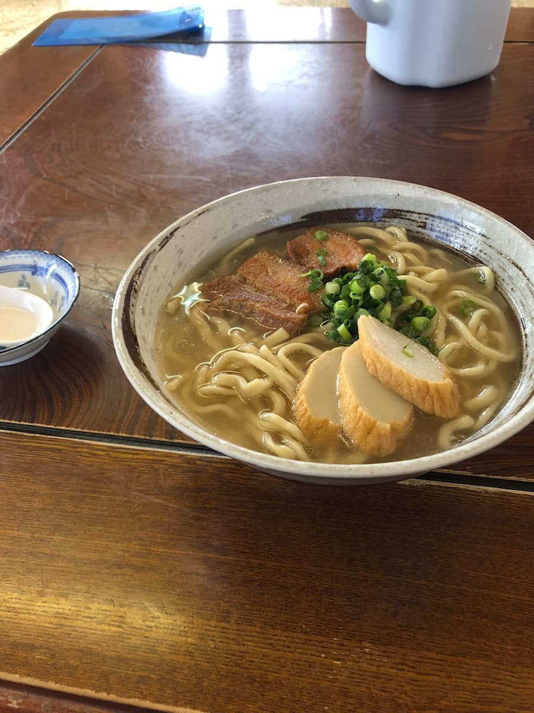

2023년 2월에 먹으러 갔습니다😊


가게 이름과 같은 '시마 소바'를 주문

삼겹살 조림(산마이니쿠)은 사르르 녹아서 맛있습니다. 면은 중간 굵기, 국물은 가쓰오 베이스이지만 돼지뼈 맛도 강하게 느껴집니다😊 최근 원재료 가격 상승으로 값을 올린 것 같은데, 그래도 대 사이즈가 650엔이면 싸다고 생각해요😁
평가(9점/15점): 평범하게 맛있습니다. 우루마시 에노히 근처에 오셨을 때 어떠세요? 바로 옆에도 다른 오키나와 소바 가게가 있는 것 같으니 다음에 도전해 보고 싶습니다.
면: ★★★☆☆（3）
수프: ★★★☆☆（3）
토핑: ★★★☆☆（3）